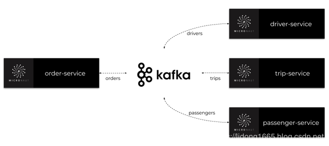
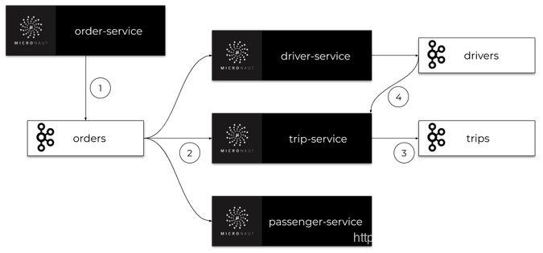

今天，我们将通过Apache Kafka主题构建一些彼此异步通信的微服务。我们使用Micronaut框架，它为与Kafka集成提供专门的库。让我们简要介绍一下示例系统的体系结构。我们有四个微型服务：订单服务，行程服务，司机服务和乘客服务。这些应用程序的实现非常简单。它们都有内存存储，并连接到同一个Kafka实例。
我们系统的主要目标是为客户安排行程。订单服务应用程序还充当网关。它接收来自客户的请求，保存历史记录并将事件发送到orders主题。所有其他微服务都在监听orders这个主题，并处理order-service发送的订单。每个微服务都有自己的专用主题，其中发送包含更改信息的事件。此类事件由其他一些微服务接收。架构如下图所示。

在阅读本文之前，有必要熟悉一下Micronaut框架。您可以阅读之前的一篇文章，该文章描述了通过REST API构建微服务通信的过程:使用microaut框架构建微服务的快速指南。
要在本地机器上运行Apache Kafka，我们可以使用它的Docker映像。最新的镜像是由https://hub.docker.com/u/wurstmeister共享的。在启动Kafka容器之前，我们必须启动kafka所用使用的ZooKeeper服务器。如果在Windows上运行Docker，其虚拟机的默认地址是192.168.99.100。它还必须设置为Kafka容器的环境。
Zookeeper和Kafka容器都将在同一个网络中启动。在docker中运行Zookeeper以zookeeper的名称提供服务，并在暴露2181端口。Kafka容器需要在环境变量使用KAFKA_ZOOKEEPER_CONNECT的地址。
$ docker network create kafka
$ docker run -d --name zookeeper --network kafka -p 2181:2181 wurstmeister/zookeeper
$ docker run -d --name kafka -p 9092:9092 --network kafka --env KAFKA_ADVERTISED_HOST_NAME=192.168.99.100 --env KAFKA_ZOOKEEPER_CONNECT=zookeeper:2181 wurstmeister/kafka使用Kafka构建的microaut应用程序可以在HTTP服务器存在的情况下启动，也可以在不存在HTTP服务器的情况下启动。要启用Micronaut Kafka，需要添加micronaut-kafka库到依赖项。如果您想暴露HTTP API，您还应该添加micronaut-http-server-netty:
<dependency>
<groupId>io.micronaut.configuration</groupId>
<artifactId>micronaut-kafka</artifactId>
</dependency>
<dependency>
<groupId>io.micronaut</groupId>
<artifactId>micronaut-http-server-netty</artifactId>
</dependency>订单微服务是唯一一个启动嵌入式HTTP服务器并暴露REST API的应用程序。这就是为什么我们可以为Kafka提供内置Micronaut健康检查。要做到这一点，我们首先应该添加micronaut-management依赖:
<dependency>
<groupId>io.micronaut</groupId>
<artifactId>micronaut-management</artifactId>
</dependency>为了方便起见，我们将通过在application.yml中定义以下配置来启用所有管理端点并禁用它们的HTTP身份验证。
endpoints:
all:
enabled: true
sensitive: false现在，可以在地址栏http://localhost:8080/health下使用health check。我们的示例应用程序还将暴露添加新订单和列出所有以前创建的订单的简单REST API。下面是暴露这些端点的Micronaut控制器实现:
@Controller("orders")
public class OrderController {
@Inject
OrderInMemoryRepository repository;
@Inject
OrderClient client;
@Post
public Order add(@Body Order order) {
order = repository.add(order);
client.send(order);
return order;
}
@Get
public Set<Order> findAll() {
return repository.findAll();
}
}每个微服务都使用内存存储库实现。以下是订单微服务（Order-Service）中的存储库实现：
@Singleton
public class OrderInMemoryRepository {
private Set<Order> orders = new HashSet<>();
public Order add(Order order) {
order.setId((long) (orders.size() + 1));
orders.add(order);
return order;
}
public void update(Order order) {
orders.remove(order);
orders.add(order);
}
public Optional<Order> findByTripIdAndType(Long tripId, OrderType type) {
return orders.stream().filter(order -> order.getTripId().equals(tripId) && order.getType() == type).findAny();
}
public Optional<Order> findNewestByUserIdAndType(Long userId, OrderType type) {
return orders.stream().filter(order -> order.getUserId().equals(userId) && order.getType() == type)
.max(Comparator.comparing(Order::getId));
}
public Set<Order> findAll() {
return orders;
}
}内存存储库存储Order对象实例。Order对象还被发送到名为orders的Kafka主题。下面是Order类的实现:
public class Order {
private Long id;
private LocalDateTime createdAt;
private OrderType type;
private Long userId;
private Long tripId;
private float currentLocationX;
private float currentLocationY;
private OrderStatus status;
// ... GETTERS AND SETTERS
}
现在，让我们想一个可以通过示例系统实现的用例——添加新的行程。
我们创建了OrderType.NEW_TRIP类型的新订单。在此之后，(1)订单服务创建一个订单并将其发送到orders主题。订单由三个微服务接收:司机服务、乘客服务和行程服务。
(2)所有这些应用程序都处理这个新订单。乘客服务应用程序检查乘客帐户上是否有足够的资金。如果没有，它就取消了行程，否则它什么也做不了。司机服务正在寻找最近可用的司机，(3)行程服务创建和存储新的行程。司机服务和行程服务都将事件发送到它们的主题(drivers, trips),其中包含相关更改的信息。
每一个事件可以被其他microservices访问,例如，(4)行程服务侦听来自司机服务的事件，以便为行程分配一个新的司机
下图说明了在添加新的行程时，我们的微服务之间的通信过程。

现在，让我们继续讨论实现细节。
首先，我们需要创建Kafka 客户端，负责向主题发送消息。我们创建的一个接口，命名为OrderClient，为它添加@KafkaClient并声明用于发送消息的一个或多个方法。每个方法都应该通过@Topic注解设置目标主题名称。对于方法参数，我们可以使用三个注解@KafkaKey、@Body或@Header。@KafkaKey用于分区，这是我们的示例应用程序所需要的。在下面可用的客户端实现中，我们只使用@Body注解。
@KafkaClient
public interface OrderClient {
@Topic("orders")
void send(@Body Order order);
}一旦客户端发送了一个订单，它就会被监听orders主题的所有其他微服务接收。下面是司机服务中的监听器实现。监听器类OrderListener应该添加@KafkaListener注解。我们可以声明groupId作为一个注解参数，以防止单个应用程序的多个实例接收相同的消息。然后，我们声明用于处理传入消息的方法。与客户端方法相同，应该通过@Topic注解设置目标主题名称，因为我们正在监听Order对象，所以应该使用@Body注解——与对应的客户端方法相同。
@KafkaListener(groupId = "driver")
public class OrderListener {
private static final Logger LOGGER = LoggerFactory.getLogger(OrderListener.class);
private DriverService service;
public OrderListener(DriverService service) {
this.service = service;
}
@Topic("orders")
public void receive(@Body Order order) {
LOGGER.info("Received: {}", order);
switch (order.getType()) {
case NEW_TRIP -> service.processNewTripOrder(order);
}
}
}现在，让我们看一下司机服务中的processNewTripOrder方法。DriverService注入两个不同的Kafka Client
bean: OrderClient和DriverClient。当处理新订单时，它将试图寻找与发送订单的乘客最近的司机。找到他之后，将该司机的状态更改为UNAVAILABLE，并将带有Driver对象的事件发送到drivers主题。
@Singleton
public class DriverService {
private static final Logger LOGGER = LoggerFactory.getLogger(DriverService.class);
private DriverClient client;
private OrderClient orderClient;
private DriverInMemoryRepository repository;
public DriverService(DriverClient client, OrderClient orderClient, DriverInMemoryRepository repository) {
this.client = client;
this.orderClient = orderClient;
this.repository = repository;
}
public void processNewTripOrder(Order order) {
LOGGER.info("Processing: {}", order);
Optional<Driver> driver = repository.findNearestDriver(order.getCurrentLocationX(), order.getCurrentLocationY());
driver.ifPresent(driverLocal -> {
driverLocal.setStatus(DriverStatus.UNAVAILABLE);
repository.updateDriver(driverLocal);
client.send(driverLocal, String.valueOf(order.getId()));
LOGGER.info("Message sent: {}", driverLocal);
});
}
// ...
}这是Kafka Client在司机服务中的实现，用于向driver主题发送消息。因为我们需要将Driver与Order 关联起来，所以我们使用@Header注解 的orderId参数。没有必要把它包括到Driver类中，将其分配给监听器端的正确行程。
@KafkaClient
public interface DriverClient {
@Topic("drivers")
void send(@Body Driver driver, @Header("Order-Id") String orderId);
}由DriverListener收到@KafkaListener在行程服务中声明。它监听传入到trip主题。接收方法的参数和客户端发送方法的类似，如下所示：
@KafkaListener(groupId = "trip")
public class DriverListener {
private static final Logger LOGGER = LoggerFactory.getLogger(OrderListener.class);
private TripService service;
public DriverListener(TripService service) {
this.service = service;
}
@Topic("drivers")
public void receive(@Body Driver driver, @Header("Order-Id") String orderId) {
LOGGER.info("Received: driver->{}, header->{}", driver, orderId);
service.processNewDriver(driver);
}
}最后一步，将orderId查询到的行程Trip与driverId关联，这样整个流程就结束。
@Singleton
public class TripService {
private static final Logger LOGGER = LoggerFactory.getLogger(TripService.class);
private TripInMemoryRepository repository;
private TripClient client;
public TripService(TripInMemoryRepository repository, TripClient client) {
this.repository = repository;
this.client = client;
}
public void processNewDriver(Driver driver, String orderId) {
LOGGER.info("Processing: {}", driver);
Optional<Trip> trip = repository.findByOrderId(Long.valueOf(orderId));
trip.ifPresent(tripLocal -> {
tripLocal.setDriverId(driver.getId());
repository.update(tripLocal);
});
}
// ... OTHER METHODS
}我们可以使用Micronaut Kafka轻松地启用分布式跟踪。首先，我们需要启用和配置Micronaut跟踪。要做到这一点，首先应该添加一些依赖项：
<dependency>
<groupId>io.micronaut</groupId>
<artifactId>micronaut-tracing</artifactId>
</dependency>
<dependency>
<groupId>io.zipkin.brave</groupId>
<artifactId>brave-instrumentation-http</artifactId>
<scope>runtime</scope>
</dependency>
<dependency>
<groupId>io.zipkin.reporter2</groupId>
<artifactId>zipkin-reporter</artifactId>
<scope>runtime</scope>
</dependency>
<dependency>
<groupId>io.opentracing.brave</groupId>
<artifactId>brave-opentracing</artifactId>
</dependency>
<dependency>
<groupId>io.opentracing.contrib</groupId>
<artifactId>opentracing-kafka-client</artifactId>
<version>0.0.16</version>
<scope>runtime</scope>
</dependency>我们还需要在application.yml配置文件中，配置Zipkin 的追踪的地址等
tracing:
zipkin:
enabled: true
http:
url: http://192.168.99.100:9411
sampler:
probability: 1在启动应用程序之前，我们必须运行Zipkin容器：
$ docker run -d --name zipkin -p 9411:9411 openzipkin/zipkin在本文中，您将了解通过Apache Kafka使用异步通信构建微服务架构的过程。我已经向大家展示了Microaut Kafka库最重要的特性，它允许您轻松地声明Kafka主题的生产者和消费者，为您的微服务启用健康检查和分布式跟踪。我已经为我们的系统描述了一个简单的场景的实现，包括根据客户的请求添加一个新的行程。本示例系统的整体实现，请查看GitHub上的源代码